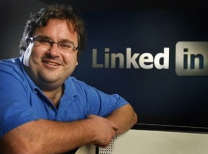

Reid Hoffman

Mùa thu năm 2002, Reid Hoffman bắt đầu kỳ nghỉ kéo dài suốt mười hai tháng ở Úc. Đó là một kỳ nghỉ dưỡng dài để Hoffman nghỉ ngơi sau một quá trình làm việc cật lực. Trong 5 năm qua, Hoffman đã miệt mài lao động, đầu tiên là ở công ty khởi nghiệp của riêng ông – Socialnet, một trang mạng xã hội đi trước Facebook hơn sáu năm và sau đó là một thành viên của nhóm sáng lập PayPal, một công ty thanh toán trực tuyến.
Trong vài tuần đi chơi với một người bạn ở miền Đông nước Úc, Hoffman vẫn không ngừng nghĩ về ba ý tưởng khác nhau cho một hành trình khởi nghiệp mới. Dù chỉ mới trải qua hai tuần trong kỳ nghỉ này nhưng ông nhận thấy không thể để mất thời gian thêm nữa. Nếu ông muốn tạo ra một công ty thương mại điện tử mới thì đây chính là thời điểm lý tưởng.
Khủng hoảng bong bóng dot-com đã khiến các quỹ đầu tư mạo hiểm cạn kiệt, dẫn đến việc nhiều kế hoạch kinh doanh không được tài trợ. Ông nhận định: “Nói chung, việc gọi vốn sẽ dễ dàng hơn khi thị trường vốn hoạt động tốt. Nhưng khi thị trường vốn sụt giảm thì việc xây dựng công ty lại còn dễ dàng hơn. Vì thật ra anh đâu có cạnh tranh trực tiếp với Google hay Microsoft. Đối thủ trực tiếp của anh là những công ty khởi nghiệp khác và tất cả đều cố gắng để tìm nguồn vốn. Khi có nhiều công ty cùng xin được tài trợ thì sự cạnh tranh sẽ rất khốc liệt.”
Hoffman bỏ ngang kỳ nghỉ ở Úc, vội vã trở về Thung lũng Silicon, tập họp nhóm cộng sự từng làm việc chung rồi thuê lại văn phòng từ một người bạn vừa khởi nghiệp thất bại. Trước thời điểm kết thúc năm đó, Hoffman và những đồng nghiệp của ông mang theo laptop, điện thoại di động và đặt hết tâm trí vào không gian ấy. LinkedIn, mạng lưới dành cho các chuyên gia trong lĩnh vực kinh doanh, đã sẵn sàng đi vào hoạt động. Chưa đầy sáu tháng sau, vào ngày 5 tháng Năm năm 2003, trang web LinkedIn chính thức ra mắt.
Có khoảng bốn nghìn rưỡi người đã đăng ký trở thành thành viên trong tháng đầu tiên. Ngày nay, LinkedIn là mạng lưới Internet chuyên nghiệp lớn nhất thế giới với hơn 100 triệu thành viên từ hơn 200 quốc gia. Cứ mỗi tuần, trang mạng này lại thu hút thêm khoảng một triệu thành viên mới. Hoffman đã là nhà đồng sáng lập kiêm CEO của LinkedIn trong bốn năm đầu tiên trước khi ông trở thành Chủ tịch Hội đồng quản trị kiêm Tổng Giám đốc vào năm 2007. Hiện nay, ông là Chủ tịch điều hành của LinkedIn.
Khi LinkedIn trở thành công ty đại chúng vào tháng 5 năm 2011, nó đã tạo thành đợt niêm yết chứng khoán lớn nhất của một công ty công nghệ kể từ khi Google ra mắt bảy năm trước. Khi thị trường đóng cửa sau ngày giao dịch đầu tiên, giá trị chứng khoán của LinkedIn đã tăng vọt 109%, đạt 94,25 đô-la/cổ phiếu, giúp giá trị thị trường của công ty đạt mức 8,9 tỷ đô-la.
Điều quan trọng hơn là LinkedIn đã làm thay đổi việc tuyển dụng chuyên nghiệp cũng như tính lưu động trong việc làm. Hầu như cả quy trình tìm việc đều bắt đầu và kết thúc thông qua các trang mạng. Hiện nay, hàng nghìn công ty đã và đang sử dụng LinkedIn để tìm kiếm các tài năng kinh doanh.
Hoffman, một trong những nhà đầu tư tài trợ nổi bật nhất của Thung lũng Silicon, không bao giờ tưởng tượng được sẽ có ngày mình trở thành một doanh nhân đầu tư theo chuỗi. Là con trai của một luật sư có tiếng ở San Francisco, Hoffman đã nuôi dưỡng ý định trở thành một giáo sư hoặc một học giả. Năm 1990, sau khi tốt nghiệp Đại học Stanford với tấm bằng Cử nhân ngành Khoa học nhận thức, Hoffman đã đến Đại học Oxford để học Thạc sĩ Triết học.
Ông nói: “Tôi nhận ra rằng các học giả viết sách thường chỉ có 50 đến 60 người đọc. Tôi thì muốn nhiều hơn thế.” Khi trở về California, ông làm việc cho Apple và sau đó là Fujitsu, trước khi trở thành người đồng sáng lập ra trang mạng xã hội Socialnet. Kể từ đó, Hoffman đã đầu tư vào hơn 100 công ty khởi nghiệp thuộc lĩnh vực công nghệ, bao gồm cả Facebook, Flickr, Groupon và Zynga, cả với tư cách cá nhân và với tư cách là một đối tác trong công ty đầu tư mạo hiểm nổi tiếng Greylock Partners.
Ông đã thành lập LinkedIn không lâu sau cuộc khủng hoảng bong bóng dot-com khi mọi người đều nghĩ rằng các công ty Internet đang lao đao. Ông có thể cho biết lý do được không?
Rất nhiều người đã thành lập các công ty công nghệ trong những năm 1993 và 1994 với những ý tưởng kém cỏi nhưng lại tạo ra được lợi nhuận lớn. Một số công ty lớn cũng đã ra đời vào thời điểm đó, bao gồm Yahoo và eBay. Tôi nghĩ năm 2002 cũng giống như vậy. Tất cả các nhà đầu tư mạo hiểm đều nói rằng thời đại Internet hướng tới người dùng đã kết thúc. Nhưng tôi thì tin nó chỉ mới bắt đầu. Mọi người từng dự đoán nó sẽ thay đổi cuộc sống của chúng ta. Chỉ là nó đã không diễn ra nhanh như chúng ta mong đợi.
Tuy rơi vào khủng hoảng nhưng Internet vẫn có khả năng tạo ra nhiều thay đổi đột phá. Nếu anh đang dự định thành lập một doanh nghiệp mới, anh cần phải tự hỏi mình: Những điều gì đang trở nên khả thi với sự xuất hiện của Internet? Liệu một sản phẩm hay dịch vụ mới sẽ chiếm lĩnh thị trường hiện hữu hay sẽ tạo ra một thị trường mới? Với LinkedIn, tôi đã nhìn vào tất cả các cơ hội mà Internet mang lại và cho rằng mọi người sẽ cần đến một hồ sơ cá nhân trực tuyến dùng cho tuyển dụng. Sự đột phá ở đây là mọi người có thể tiếp cận trực tiếp với các ứng viên tốt nhất thay vì ngồi đợi các hồi đáp cho một thông báo tuyển dụng trên một trang web.
Khi ở Úc, tôi đã tự nói với chính mình: “Bây giờ mới chính là thời điểm thích hợp để bắt đầu.” Tôi cần nhắm vào lĩnh vực Internet cho người dùng phổ thông.
Mặc dù ông đã có một vài ý tưởng đột phá, nhưng một số bạn bè của ông vẫn tỏ ra nghi ngờ về LinkedIn. Vậy điều gì đã khiến họ nghĩ rằng nó không khả thi?
Một trong những điều mà các doanh nhân đầu tư theo chuỗi thường làm là cân nhắc các ý tưởng mới nếu họ không bận thực hiện một ý tưởng nào đó. Khi đấy, tôi có ba ý tưởng và LinkedIn là ý tưởng hay nhất. Một trong những điều quan trọng về ý tưởng kinh doanh và khởi nghiệp là anh phải trở thành người đi ngược trào lưu một cách đúng đắn khi anh phải làm những việc không mấy ai làm và tin rằng mình có thể biến chúng thành hiện thực. LinkedIn một phần nào đó đã đi ngược lại trào lưu vì nó đưa một lượng người dùng khá lớn vào mạng lưới trước khi họ kịp nhận ra bất kỳ giá trị nào từ nó. Tôi tin rằng tôi có thể kiếm đủ số người chấp nhận trải nghiệm và khám phá trang mạng của mình.
Tôi đã cần đến một triệu người dùng đầu tiên mới có thể bắt đầu phát huy giá trị của LinkedIn. Nếu ai đó đang tìm kiếm một chuyên gia phần mềm mã nguồn mở, họ sẽ tìm được người đó trên LinkedIn. Hoặc nếu anh đang tìm kiếm một người tiếp thị thông minh để gia nhập vào công ty, anh cũng có thể tìm thấy được. Một khi anh đã có một triệu người dùng, anh sẽ thu được những kết quả tích cực cho các tìm kiếm của mình.
Lý do mà bạn bè tôi không thích LinkedIn là vì họ nghĩ rằng tôi không thể có được con số hàng triệu người dùng. Tôi đã nói chuyện với một nhóm bạn chỉ để lấy thông tin phản hồi từ họ. Đó là một trong những điều anh cần làm khi là một doanh nhân. Anh nói chuyện với những người thông minh, có khả năng cung cấp cho anh những thông tin phản hồi chất lượng. Những nhà đổi mới sáng tạo thường bị cuốn theo suy nghĩ của riêng mình mà không nhận biết được mình nên đi đến đâu. Nếu mọi người nghĩ rằng ý tưởng đó không có giá trị, anh có thể giữ ý kiến của mình hay thay đổi ý tưởng đó. Bạn có thể chuyển hướng ý tưởng thậm chí trước khi anh bắt đầu gọi vốn, thuê người hay lập trình. Anh sẽ phải thay đổi rất nhiều lần. Tôi đã thử nghiệm hai hoặc ba ý tưởng và phản hồi chủ yếu là: Liệu anh có thể tìm được một triệu người dùng đầu tiên hay không?
Tôi nói: “Tôi nghĩ rằng tôi có thể và đó sẽ là ưu tiên hàng đầu.” Trên thực tế, tôi đã kiếm được một số tiền từ PayPal[38] nên không cần phải huy động vốn để bắt đầu hoạt động nữa. Tôi đã dùng tiền của mình vì việc thuyết phục các nhà đầu tư rằng tôi có thể kiếm được một triệu người dùng trong khi chưa có trong tay một sản phẩm nào quả thực khó khăn hơn rất nhiều.
Điều gì khiến ông tự tin có thể nhanh chóng đạt được một số lượng người dùng lớn như vậy cho một thứ còn rất lạ lẫm và khác biệt?
Có một vài điều như sau. Như tôi đã nói, tất cả các nhà đầu tư đều đã quay lưng với thị trường Internet cho người dùng phổ thông. Đối với họ, Internet đã trở nên nhàm chán. Dù không còn nhiều hoạt động nhưng người ta vẫn thích thú với Internet. Họ luôn tự hỏi rằng làm thế nào tôi có thể sử dụng Internet và nó có gì tốt cho tôi? Một minh chứng cho việc này là sự nổi lên của Friendster – một trang mạng xã hội ra mắt vào năm 2002 và nhanh chóng thu hút ba triệu người dùng chỉ trong vài tháng đầu tiên. Đây là dịch vụ tiện ích nhưng đơn giản mà mọi người rất thích. Một số người nghĩ về nó như là một trang web hẹn hò, còn số khác lại cho rằng trang mạng này khá kỳ quái. Chỉ cần như thế là đủ để tạo ra sự tăng trưởng chóng mặt cho trang Friendster.
Vì vậy, nếu mọi người nghĩ rằng Internet bây giờ rất nhàm chán thì tôi tự hỏi phải làm thế nào để nó trở nên hấp dẫn hơn và mọi người có thể tìm kiếm những người mà họ quen biết. Chúng tôi có thể có đủ người dùng và phát triển lên đến con số một triệu thành viên. Về cơ bản đó là một canh bạc. Tôi hiểu rõ về sự lan truyền. Tôi hiểu quá trình mời gọi như thế nào. Trong quá trình giúp LinkedIn phát triển được đến quy mô lớn, tôi đã tạo ra một số công cụ mà hiện nay đã được sao chép bởi những người khác, ví dụ như công cụ “Thời hạn của thư mời” và công cụ cho phép tải lên sổ địa chỉ để thu hút nhiều thành viên hơn. Đây là những công cụ đã mang đến cho tôi một triệu người dùng đầu tiên.
Rõ ràng, một triệu người dùng là con số cần thiết để có được một mạng xã hội hiệu quả. Ông đã nghĩ là phải mất bao lâu mới đạt được con số đó?
Anh thực sự không thể biết được và vì vậy anh cần phải dự đoán theo tình huống. Tình huống thứ nhất là không có ai mời ai cả. Tình huống thứ hai là có một số người mời người khác nhưng không nhiều lắm. Cuối cùng là tình huống tăng trưởng mạnh. Chúng tôi hy vọng có thể tăng trưởng tốt ngay từ ngày đầu tiên. Trong trường hợp đó, chúng tôi có thể có một triệu người dùng sau sáu tháng hoặc chín tháng. Chúng tôi đã hy vọng sẽ đạt được mục tiêu trong vòng một năm nhưng tốt nhất là trong vòng sáu tháng. Chúng tôi bắt đầu với 112 lời mời từ 13 nhân viên gửi ra ngoài. Sau một hoặc hai tháng chúng tôi đã phát triển ổn định nhưng không thật sự đột phá. Nếu chúng tôi tiếp tục phát triển với tốc độ này, chúng tôi sẽ gặp khó khăn. Vì vậy, những gì chúng tôi đã làm là thăm dò xem đại đa số người dùng mong muốn điều gì nhất khi họ đến với trang mạng này. Họ chủ yếu muốn biết có những ai khác cũng sử dụng trang mạng. Do đó, chúng tôi đã cho xây dựng một tính năng gọi là sổ địa chỉ và nó đã giúp chúng tôi tăng trưởng đột phá.
Tôi đoán ông đã rút được khá nhiều điều bổ ích từ SocialNet và PayPal. Ông đã áp dụng những bài học đó khi xây dựng LinkedIn phải không?
Tôi đúc kết được rất nhiều bài học từ SocialNet. Một trong số đó là trước tiên, phải đặt trọng tâm đầu tiên vào chiến lược tài chính, tiếp đến là chiến lược phân phối sản phẩm và sau cùng là chiến lược về sản phẩm. Đa số mọi người thường nghĩ: “Tôi nảy ra một ý tưởng về sản phẩm, vậy thì chiến lược về sản phẩm phải là quan trọng nhất.” Nhưng thực chất không phải vậy. Nếu anh đưa ra được một sản phẩm tốt mà không có cách phân phối hiệu quả thì kiểu gì sản phẩm ấy cũng chết yểu. Do vậy, anh cần phải nghĩ cách làm sao đưa sản phẩm của mình đến tay hàng triệu người dùng. Đấy là điểm mấu chốt. Hơn nữa, nếu anh không thể gọi vốn thì cũng chẳng sao, miễn là anh có một sản phẩm tốt trong tay.
Trừ hai trường hợp ngoại lệ, nhóm sáng lập của tôi đều là những người mà tôi từng cùng làm việc hồi còn ở SocialNet và PayPal. Hai trường hợp ngoại lệ là Eric Ly và Konstantin Guericke. Tôi biết Eric từ khi còn là sinh viên Trường Stanford. Còn Konstantin thì tôi quen anh ấy năm 1996. Lúc đó, anh ấy là trưởng phòng tiếp thị, còn tôi là trưởng bộ phận sản phẩm cho hai công ty mạng đang cạnh tranh với nhau. Do đó, hai người này thì tôi từng quen biết khá lâu còn những người khác thì đã cùng làm việc trước đấy. Một trong những tôn chỉ của chúng tôi là xem trọng thời điểm tiếp cận thị trường.
Quan điểm của tôi là nếu anh không cảm thấy xấu hổ với phiên bản đầu tiên của sản phẩm thì có nghĩa là anh đã tung nó ra quá muộn. Với công ty khởi nghiệp đầu tiên của tôi, SocialNet.com, chúng tôi phải mất đến chín tháng mới tung ra được sản phẩm đầu tiên. Đó là một sai lầm tai hại. Chúng tôi muốn có tất cả các chức năng chi tiết ngay lập tức, bao gồm cả tính năng kiểm soát mạng xã hội mà nhờ đó người dùng có thể quyết định kết nối hoặc từ chối những người trong mạng lưới bạn bè của họ. Chúng tôi muốn tất cả mọi người phải xuýt xoa về sản phẩm hết sức tuyệt vời của mình. Chúng tôi đã tốn hàng đống thời gian cho việc đó thay vì tập trung vào các vấn đề khác quan trọng hơn, như làm cách nào để đưa sản phẩm của mình tiếp cận hàng triệu người dùng.
Với LinkedIn, chúng tôi cần phải làm thêm nhiều việc để hoàn thiện khả năng phân phối. Tháng Tư năm 2003, những người đồng sáng lập cùng với tôi là Eric, Konstantin, Jean-Luc Vaillant và Allen Blue đã nói rằng: “Không, chúng ta chưa sẵn sàng cho ra mắt sản phẩm này đâu. Cần phải thêm vào tính năng cho phép người dùng công khai lưới mạng của họ. Mọi người sẽ không biết phải sử dụng trang web này như thế nào nếu thiếu đi tính năng đó.”
Tôi hỏi lại họ: “Được rồi, để xem liệu trang web có thể hoạt động khi thiếu tính năng đó không? Liệu người dùng có thể đăng ký, mời bạn bè, tạo hồ sơ trực tuyến, tìm kiếm ai đó và giao tiếp bằng những lời giới thiệu với mọi người trên trang web không?” Họ đáp: “Được chứ.” Và tôi nói: “Vậy thì chúng ta cứ tung ra thôi. Nếu tính năng tiếp theo mà chúng ta phải làm là công cụ tìm kiếm liên lạc thì chúng ta sẽ làm sau.” Thế rồi, chúng tôi phát hiện trên trang web có một vài lỗi mà chúng tôi chưa biết, nên chúng tôi phải khắc phục những lỗi đó. Sau đó thì độ lan truyền của trang web cũng chưa được như chúng tôi mong đợi. Vì thế, chúng tôi cũng phải giải quyết vấn đề này.
Khi mọi người đăng ký vào trang web, họ thường tự hỏi: “Có người quen nào sử dụng trang này không nhỉ?” Và chúng tôi nghiệm ra rằng nếu chúng tôi cho phép họ tải danh bạ liên lạc của họ lên thì chúng tôi có thể hiển thị chính xác những người mà họ biết cũng đang sử dụng trang web này. Nếu có nhiều người tải danh bạ lên thì việc gửi các lời mời khác đi sẽ rất dễ dàng. Hai điều này (công cụ tải danh bạ và cải thiện tính lan truyền) liên quan mật thiết đến sự thành bại của chúng tôi nên nhóm đã bắt tay vào làm ngay.
Tôi cũng hiểu được tầm quan trọng của việc tuyển dụng những nhân viên năng động có kiến thức tổng quát vì họ có thể thay tôi làm đủ mọi việc. Trong giai đoạn đầu, có cả tỷ việc phải làm và có cả ngàn cách để phá sản. Anh cần phải thuê văn phòng. Anh cần thiết lập chế độ bảo hiểm y tế. Cần phải lập ra kế hoạch tiếp thị. Tập đoàn American Express gọi cho anh và muốn có một thỏa thuận phát triển doanh nghiệp. Phải mất một thời gian để công ty có đội ngũ hoàn chỉnh, do đó việc tuyển được những chuyên viên có kiến thức tổng quan là một điều mấu chốt. Tại SocialNet, tôi thường tuyển những người chỉ chuyên về từng lĩnh vực. Tuy nhiên, sau đó tôi nhận ra rằng việc thuê những người có thể thích ứng nhanh và làm được nhiều việc khác nhau thực sự quan trọng để tránh được những rắc rối trong giai đoạn đầu khởi nghiệp.
Việc kinh doanh thực tế có trùng khớp với những kế hoạch ban đầu của ông không?
Khoảng một năm trước, chúng tôi giành được giải thưởng Công ty khởi nghiệp của năm của Trường Kinh doanh Harvard. Lúc đó, Mark Kvamme, đối tác từ Quỹ đầu tư Sequoia từng rót tiền vào công ty chúng tôi năm 2003, rất tha thiết muốn nói lời giới thiệu. Và quả thật ông ấy đã có những lời phát biểu thật tuyệt vời. Trước đây, khi chúng tôi kêu gọi đầu tư giai đoạn đầu từ Quỹ đầu tư Sequoia, chúng tôi đã trình bày một kế hoạch để thu hồi vốn trong năm đó nhưng rồi tôi lại nhận thấy đó không phải là một ý hay. Thế là tôi đã nói: “Tôi nghĩ rằng chúng tôi cần tập trung hoàn toàn vào việc tăng trưởng trong năm nay. Do đó, chúng tôi sẽ để kế hoạch thu hồi vốn cho năm sau.” Mark nghĩ điều này là hợp lý và chúng tôi đã làm như vậy. Ở bữa tiệc tối của lễ trao giải, ông ấy đã phát biểu rằng kế hoạch của chúng tôi – doanh nghiệp của chúng tôi sẽ như thế nào, mô hình kinh doanh hoạt động ra sao, kiếm tiền bằng cách nào, tổng doanh thu mỗi năm sẽ là bao nhiêu – sẽ giúp công ty đạt được mức tăng trưởng 10% mỗi năm trong ba năm tới.
Những số liệu đó đã khiến tôi thực sự ngạc nhiên vì khi anh điều hành công ty, anh giống như đang chạy băng qua một bãi mìn vậy. Anh phải tập trung giải quyết hết vấn đề này đến vấn đề khác. Anh không còn đầu óc để nghĩ xem: “Mình đã đưa ra cho các nhà đầu tư của mình mô hình tài chính như thế nào?” Anh không bao giờ nhìn lại và tự hỏi bản thân câu hỏi đó vì tất cả những gì anh đang cố sức làm là xây dựng doanh nghiệp càng nhanh càng tốt. Các mô hình anh đưa ra cho họ xem không phải là bằng chứng thuyết phục rằng anh có thể thành công. Chúng chỉ thể hiện niềm tin của anh rằng: “Tôi nghĩ rằng chúng tôi có thể làm được điều này.” Dù sao thì, chúng tôi cũng đã đạt được những dự kiến của mình. Chúng tôi có thêm mô hình thành viên có trả phí và một mô hình kinh doanh quảng cáo tuyển dụng. Trước đây, chúng tôi vẫn chưa có phân khúc khách hàng doanh nghiệp. Sau đó, chúng tôi đã xây dựng được phân khúc này sớm hơn dự kiến vì chúng tôi có lượng nhu cầu từ các doanh nghiệp cần sử dụng dịch vụ khá cao.
Reid, tôi chắc chắn rằng công việc kinh doanh lúc đầu của ông không hề thuận buồm xuôi gió. Chưa có doanh nghiệp nào mới khởi nghiệp có thể suôn sẻ ngay được. Vậy những chướng ngại vật chính mà ông từng phải trải qua là gì?
Khủng hoảng đầu tiên vẫn xảy ra dù chúng tôi đã lường trước được. Tốc độ tăng trưởng của chúng tôi đã không như mong đợi và nếu cứ tiếp tục với tốc độ đó thì sớm muộn gì chúng tôi cũng gặp rắc rối. Do đó, chúng tôi ngay lập tức tập trung vào những gì thu hút mọi người đăng ký tài khoản và những gì khiến người dùng thích thú khi họ đang sử dụng trang web này. Chúng tôi nhận ra rằng, nhiều người dùng không đăng ký vì họ nghĩ họ có thể làm điều đó sau cũng được và những gì họ quan tâm nhất khi tham gia là biết được những người cũng đang sử dụng trang web này. Những điều này buộc chúng tôi phải khắc phục khả năng lan truyền của trang web.
Một thử thách khác là chúng tôi phải đi qua giai đoạn đầu tư bước đầu mà không có một đồng lợi nhuận nào dù chỉ tập trung vào việc tăng trưởng quy mô. Chúng tôi phải mất 464 ngày để cán mốc một triệu thành viên đăng ký. Bây giờ con số đã lên đến hơn 100 triệu. Mặc dù chúng tôi cho rằng mình đã tung ra một ý tưởng cực kỳ độc đáo nhưng vẫn còn có một số trang mạng chuyên về công việc khác như Spoke.com, Zero Degrees Net-work, Visible Path… Do đó, để đạt được con số một triệu thành viên và vượt qua mốc đó thực sự là vấn đề mấu chốt. Chúng tôi cũng gặp một chút khủng hoảng khi nhận ra Spoke cũng đang cố thành lập một mạng liên kết công cộng cũng như riêng tư trong lĩnh vực tuyển dụng. Dù vậy, không ai trong số họ có được sức hút mà chúng tôi có.
Những thành quả ông có được nhờ tất cả những gì ông học được trước đây: tung sản phẩm ra càng sớm càng tốt và chạy đua để đạt được con số một triệu thành viên?
Vâng. Hãy làm những điều có thể khiến mọi người tham gia bằng cách gửi lời mời và chấp nhận lời mời.
Quy tắc để thành công trong lĩnh vực Internet cho người dùng phổ thông hẳn phải rất khác biệt so với các lĩnh vực kinh doanh khác. Ông có thể cho chúng tôi biết một vài điểm khác biệt mấu chốt không?
Có hai loại doanh nghiệp: doanh nghiệp có ảnh hưởng lớn và doanh nghiệp thành công. Mục tiêu của doanh nghiệp thành công thì rất đơn giản: Tìm kiếm thị trường để cung cấp sản phẩm có tính cạnh tranh. Đối với doanh nghiệp có ảnh hưởng lớn trong lĩnh vực Internet người dùng thì lại khác. Trừ những trường hợp ngoại lệ cực kỳ hiếm hoi, anh cần phải suy nghĩ về quy mô rất lớn khi bước chân vào lĩnh vực Internet cho người dùng phổ thông.
Một trong những sai lầm trong thời kỳ bùng nổ bong bóng Internet là có một số người cho rằng giá trị của một khách hàng sử dụng dịch vụ ngân hàng trực tuyến cũng không khác gì một khách hàng thông thường của Ngân hàng Wells Fargo. Điều đó không đúng. Anh cần phải phát triển dịch vụ trên một quy mô lớn hơn nhiều để khai thác thị trường hiệu quả hơn. Điều thứ hai là trừ phi anh điều hành một doanh nghiệp thương mại điện tử, anh luôn cần có một mô hình thu hút người dùng mà không phải trả phí. Ngoài cách đó ra sẽ không còn cách nào khác để có được hàng triệu người dùng. Nếu anh phải bỏ tiền để mua người cho mình, chắc chắn anh sẽ thất bại.
Vậy LinkedIn đã thay đổi cách mọi người tìm việc và cách các doanh nghiệp tuyển dụng nhân viên như thế nào?
Chúng tôi hy vọng rằng những thay đổi này chỉ mới là bước khởi đầu. Hiện nay, nhiều người tin rằng có một hồ sơ nghề nghiệp trực tuyến là một việc hữu ích. Nhờ hồ sơ trực tuyến, một người đồng nghiệp đã mất liên lạc từ lâu có thể tìm thấy anh, hoặc một ai đó có thể tìm được ứng viên cho một vị trí tốt, hoặc một công ty khởi nghiệp có thể tìm được người cho hội đồng tham vấn của họ, cũng như một người nào đó có thể thuê anh tư vấn.
Giờ đây, chúng ta có một nơi tập trung để những nhà tuyển dụng có thể chọn lựa ứng viên phù hợp. Hơn thế nữa, anh có thể chứng minh được mình không nói dối vì anh có những đồng nghiệp và mạng lưới xã hội của mình.
Đó là xu hướng chính mà LinkedIn đang định hình một cách tự nhiên. Nếu một người nào đó vào Google và gõ tên của anh, anh sẽ muốn họ tìm thấy những gì? Anh sẽ muốn họ tìm thấy hồ sơ nghề nghiệp của mình trước tiên.
Do đó, những gì chúng tôi đã rút ra được trong vài năm qua là làm cách nào để anh luôn cập nhật mới nhất? Làm cách nào bạn luôn biết được những gì đang diễn ra với công ty của mình, với ngành công nghiệp và với không gian làm việc của mình? Đó là những gì chúng tôi đang làm bằng cách liên kết Twitter với LinkedIn để tạo ra LinkedIn Today, nơi chúng tôi cung cấp cho các thành viên những bài viết được chia sẻ nhiều nhất và phù hợp nhất với họ.
Dường như ông đã tính toán thời gian phát hành cổ phiếu ra công chúng cực kỳ chính xác. Có phải ông đã có chiến lược cho việc này?
Một lúc nào đó, anh sẽ phải phát triển thành công ty đại chúng hoặc là chấp nhận bị mua lại. Vậy, khi nào là thời điểm tốt nhất để một công ty tối đa hóa giá trị của nó và trở thành một công ty đại chúng? Đó là một câu hỏi lớn. Khoảng một năm trước, CEO Jeff Weiner và tôi đã bàn bạc về vấn đề này. Và chúng tôi cho rằng năm 2011 sẽ là thời điểm mà rất nhiều công ty xếp hàng để ra mắt công chúng. Chúng tôi nghĩ rằng đứng đầu hàng thì sẽ tốt hơn là đứng đâu đó ở giữa hàng. Khi anh đứng đầu hàng, anh sẽ thu hút được nhiều sự chú ý của các nhà đầu tư. Anh có thể kể câu chuyện kinh doanh của mình rành mạch hơn, rằng anh đang đầu tư tiền trở lại để phát triển công ty. Chúng tôi đã nhanh chóng đại chúng hóa và giờ thì rất nhiều công ty cũng đang ra mắt công chúng. Chúng tôi đã có thể kể với các ngân hàng đầu tư câu chuyện của mình một cách mạch lạc hơn vì chúng tôi là người dẫn đầu xu hướng (đại chúng hóa).
Reid, ông là một nhà đầu tư tài trợ rất nhiệt thành tại Thung lũng Silicon. Ông đã nhìn thấy rất nhiều kế hoạch kinh doanh và rất nhiều ý tưởng. Theo ông, đâu là những sai lầm mà các nhà khởi nghiệp thường gặp nhất khi cố thuyết phục để thu hút vốn đầu tư từ ông?
Một số điều tôi sắp nói sau đây khá hiển nhiên. Tốt hơn là anh cần có một kế hoạch tốt. Anh phải giải thích được tại sao thị trường anh định tham gia vào là một thị trường tiềm năng. Tại sao anh có khả năng cạnh tranh tốt trong thị trường đó? Làm cách nào mà một đấu thủ nhỏ bé có thể đứng vững trong cuộc cạnh tranh? Tập thể của anh sẽ giúp anh đạt được thành công như thế nào? Rất nhiều bài thuyết trình đã bị loại vì không đáp ứng được những câu hỏi này. Giả như anh có thể trả lời hết những câu hỏi này thì sao? Một trong những điều tôi luôn khuyên các doanh nhân khởi nghiệp làm là vạch rõ những rủi ro mà họ có thể gặp phải. Bất kỳ dự án kinh doanh nào cũng tiềm ẩn những rủi ro cả. Nếu anh không thể mô tả chúng rõ ràng thì hoặc là anh đang nói dối các nhà đầu tư tiềm năng của mình, hoặc là anh ngu ngốc vì anh nghĩ nó hoàn toàn không có rủi ro. Đó không phải là cách hay để thiết lập mối quan hệ đối tác. Việc đầu tư cần được hiểu như một hình thức hùn hạp tài chính. Vì vậy, anh cần có một mối quan hệ thẳng thắn, chân thành và minh bạch với đối tác của bạn.
Lúc bắt đầu khởi nghiệp cũng là lúc anh đang bước vào một giai đoạn căng thẳng và đầy khó khăn. Tất cả mọi công ty khởi nghiệp đều có những thời khắc đen tối. Đó là khi tất cả mọi người – các nhà đầu tư và các nhà sáng lập – đều hỏi: “Tại sao chúng ta lại cho rằng đây là một ý tưởng hay cơ chứ?” Anh sẽ cần một đối tác tốt trong những thời khắc như thế. Vì vậy, hãy chắc chắn rằng anh đã chọn được những đối tác tốt. Các doanh nhân khởi nghiệp thường tối đa hóa tiền đầu tư và tối thiểu hóa sự loãng giá (dilution). Thực sự những gì anh cần cố gắng làm là để tối đa hóa thành công. Nếu anh chọn một đối tác trên cơ sở tối đa hóa tiền đầu tư hoặc giảm thiểu sự loãng giá, có thể anh đang đưa doanh nghiệp của mình vào chỗ nguy khốn.
Trên thực tế, trong bốn lần gọi vốn cho LinkedIn, đúng ra, tôi có thể nhận được một mức tiền cao hơn. Nhưng tôi đã cố gắng để tối đa hóa giá trị bằng cách xây dựng một đội ngũ được tổ chức tốt và hoạt động hiệu quả. Hội đồng quản trị cũng là một phần quan trọng trong đội ngũ của anh hệt như các nhân viên điều hành vậy. Để tôi cho anh một ví dụ nhé. Khi đội ngũ của chúng tôi phải tạo ra các tính năng có thể đem lại doanh thu cho trang web, họ đã nghĩ ra một sản phẩm hết sức thú vị. Sản phẩm này là LinkedIn Answers (cho phép người dùng đặt câu hỏi và có được câu trả lời từ các thành viên có chuyên môn trong lĩnh vực đó). Sau đó, chúng tôi đã tung sản phẩm này ra và cho phép người dùng sử dụng nó miễn phí.
Các nhân viên đã nói rằng: “Chúng tôi nghĩ nên thu phí người dùng với tính năng lấy thông tin kinh doanh từ mạng xã hội. Chúng tôi nghĩ chúng ta có thể kiếm tiền bằng cách đó.” Thế là khi chúng tôi đề cập đến vấn đề này trong cuộc họp Hội đồng quản trị, David Sze, thành viên Hội đồng quản trị đến từ Greylock Partners, đã hỏi một câu hết sức cơ bản: “Các anh tung ra một tính năng mới mà vừa mong có được người sử dụng vừa muốn thu được tiền từ người dùng ư? Các anh có vấn đề hai lớp ở đây đấy. Đây là một tính năng mới mẻ mà họ chưa từng dùng qua và họ sẽ phải trả tiền để sử dụng nó. Đó là một rủi ro khá lớn. Nếu việc này không hiệu quả, các anh sẽ gặp rất nhiều khó khăn để có được doanh thu.”
Thế là chúng tôi quay lại từ đầu và quyết định không làm sản phẩm đó nữa. Đó là một ví dụ cho thấy Hội đồng quản trị đã giúp chúng tôi tránh khỏi một sai lầm. Chúng tôi vẫn chưa bắt đầu thực hiện dự án đó. Tôi đã hỏi: “Mọi người sử dụng mạng xã hội của chúng ta để làm gì?” Câu trả lời là người ta dùng mạng để tìm những người khác. Câu hỏi tiếp theo là: “Mọi người sẽ đồng ý trả phí để sử dụng dịch vụ tìm người nào?” Vào thời điểm đó, cách duy nhất anh có thể giao tiếp với người khác trên trang của chúng tôi là thông qua giới thiệu. Do đó, nếu anh có thể tìm kiếm và giao tiếp với tất cả mọi người thì đó sẽ là dịch vụ mà người dùng sẵn sàng trả tiền để sử dụng. Vì vậy, chúng tôi đã tạo ra tính năng này và rõ ràng là nó đã đem đến lợi nhuận.
Reid, ông sắp xuất bản cuốn sách The start-up of you (tạm dịch: Công ty khởi nghiệp của bạn) vào tháng Hai năm 2012. Trong đó, ông có đề cập rằng các chuyên gia cần một tư duy kiểu mới và những kỹ năng mới để có thể cạnh tranh. Thông điệp chính ở đây là gì?
Anh cần phải là ông chủ của chính cuộc đời mình. Ý tưởng này đã đến sau khi tôi được mời đọc diễn văn trong lễ tốt nghiệp cho trường cũ của mình vào năm ngoái, Trường Putney ở bang Vermont. Quan niệm về việc leo lên những nấc thang nghề nghiệp ổn định đã xưa cũ. Không có nghề nghiệp nào là chắc chắn nữa. Môi trường mà chúng ta tìm kiếm việc làm cũng giống như môi trường của các doanh nhân khởi nghiệp: bất ổn và thay đổi không ngừng. Vì vậy, anh hãy lên chiến lược cho sự nghiệp của mình theo cách mà các doanh nhân bắt đầu công việc kinh doanh của họ.
Anh không thể chỉ đứng đó nói rằng: “Tôi có bằng đại học. Tôi có quyền được có việc làm. Ai đó hãy đến thuê tôi và đào tạo tôi đi.” Anh cần phải nắm được ngành nào đang “hấp dẫn”, những gì đang diễn ra bên trong ngành đó và tự tìm cách tăng giá trị cho bản thân một cách độc đáo nhất. Đối với các doanh nhân, họ cần phải cố gắng trở nên thật khác biệt hoặc chấp nhận thất bại – và bây giờ tất cả chúng ta cũng phải như thế.
Về cơ bản, tôi đã khuyên các sinh viên hãy hành động như thể họ là ông chủ của chính mình, theo bốn nguyên tắc.
Nguyên tắc thứ nhất trong khởi nghiệp là anh không thể chỉ chấp nhận thế giới xung quanh như cách mà bạn nhìn thấy. Anh phải nhận ra mình muốn thế giới xung quanh mình như thế nào và sau đó tìm cách thay đổi nó theo cách mà anh muốn. Các doanh nghiệp đã làm điều đó bằng cách tạo ra một sản phẩm hoặc dịch vụ mà họ cho rằng cần phải tồn tại trên đời này.
Về phía mình, tôi muốn tạo ra một dịch vụ Internet có thể giúp con người định hướng cuộc sống tốt hơn. Vì thế, đầu tiên, tôi học những kỹ năng cơ bản mà tôi cần khi còn làm việc cho Apple cũng như Fujitsu và mở công ty riêng sớm nhất có thể. Tôi cố gắng biến mình thành một người đủ sức xây dựng nên các công ty hoạt động trong lĩnh vực Internet.
Nguyên tắc thứ hai trong khởi nghiệp là phải chấp nhận những rủi ro một cách khôn ngoan. Có một châm ngôn rất hay là “Không liều thì không ăn nhiều”. Sống trên đời có nghĩa là anh đã phải gánh đủ loại rủi ro. Vậy thì cứ chấp nhận chúng tôi một cách chủ động. Anh chỉ có thể đạt được một điều gì đó đáng kể nếu anh chấp nhận rủi ro. Những gì tôi rút ra được khi làm chủ một doanh nghiệp là phải phân biệt rõ giữa những rủi ro “chết người” với những rủi ro “gây đau đớn”. Rủi ro “chết người” là những rủi ro mà khi thất bại, anh không có cơ hội nào khác nữa. Hãy tránh vướng vào những rủi ro kiểu này nếu không cần thiết. Những rủi ro “gây đau đớn” là khi thất bại, anh phải chấp nhận đau đớn để sửa chữa sai lầm. Chấp nhận rủi ro một cách khôn ngoan không phải là tránh né mọi rủi ro mà là lựa chọn các rủi ro “gây đau đớn” cần thiết để có thể đạt được những gì mà anh muốn.
Cuộc sống đầy rẫy những lần chuốc lấy rủi ro đau đớn để đạt được thành quả tuyệt vời, từ việc mở lời hẹn hò với người mình thích, tới việc lựa chọn trường đại học, chuyên ngành và nghề nghiệp. Hãy học cách tận hưởng những cú nhảy vọt và chuyển đổi như một phần trong cuộc sống. Những cú nhảy mạo hiểm sẽ đưa anh đến những nơi thấy thú vị. Tôi đã học được nguyên tắc này bằng việc bước ra khỏi trình tự cuộc sống của mình: Từ trường trung học ở Putley tới trường đại học ở Stanford, rồi tốt nghiệp trường Oxford mà không có kế hoạch cụ thể nào. Vào thời điểm đó, dường như tất cả bạn bè của tôi đều đang tiến triển trong cuộc sống của họ – tốt nghiệp trường luật, ra đời đi làm và tất cả đều có những kế hoạch cụ thể. Tôi có cảm giác mình đang di chuyển rất chậm chạp và bị tụt lại đằng sau so với bạn bè. Nhờ quá trình chuyển đổi và mạo hiểm với một khoảng thời gian không có bất cứ kế hoạch cụ thể nào đó, tôi mới nhận ra rằng mình nên bắt đầu làm một điều gì đó mà bản thân thực sự muốn làm, hơn là cứ lao đầu vào con đường học thuật trước mắt.
Điều này dẫn đến nguyên tắc thứ ba trong khởi nghiệp: Hãy chọn con đường ít người đi. Thông thường, khi trích dẫn câu thơ này của Robert Frost[39], người ta muốn nói đến việc tự khám phá bản thân. Tự khám phá là một việc rất tốt. Nhưng ở đây, điều tôi muốn nói là cách mà anh hoàn thành điều gì đó thú vị trong cuộc đời mình. Khi anh chọn một con đường nhiều người đi, anh chỉ đơn giản đang đi con đường mà rất nhiều người khác từng đi. Nhưng khi anh chọn con đường ít người đi hoặc tự tạo ra đường đi cho riêng mình, anh sẽ có nhiều khả năng khám phá hoặc tạo ra những điều rất thú vị. Các doanh nhân làm điều này bằng cách nhảy vào những nơi xa lạ và cố thử tạo ra sản phẩm hay dịch vụ mới. Họ từ bỏ sự an toàn trong nghề nghiệp với một khoản tiền lương ổn định để sáng tạo ra điều gì đó mới mẻ.
Và nguyên tắc thứ tư khi khởi nghiệp là hãy lên kế hoạch cho vận hạn, cả vận may và vận rủi. Điều này nghe có vẻ phi lý. Làm sao có thể lên kế hoạch cho những điều không xác định được? Thật ra, việc này khá đơn giản. Để lên kế hoạch cho vận may, anh chỉ cần để ý những cơ hội xuất hiện trên đường mình đi và bắt lấy chúng. Anh sẽ dễ dàng tìm thấy vận may trên con đường ít người đi. Đó cũng là một lý do nữa để lựa chọn con đường hẻo lánh hay tự tạo lối đi riêng cho mình.